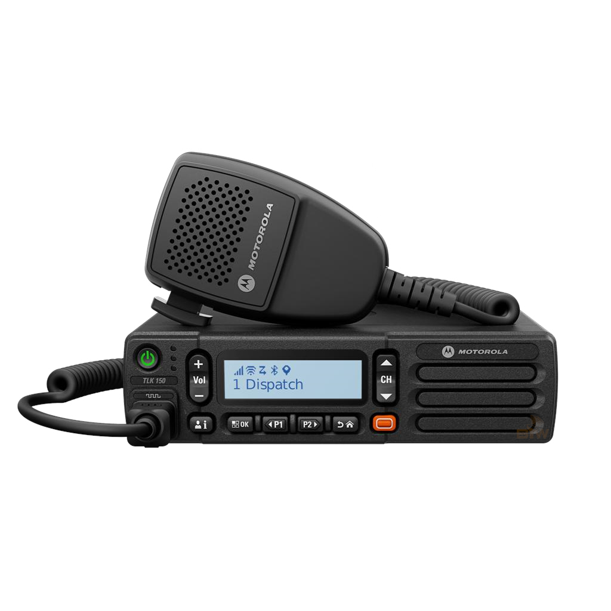

Whether you need on-site or wide-area communication, Digitricx Systems offers a wide range of two-way radio products and services to augment and support these products. Success in today's business world depends on exceptional performance. This means you need fast, dependable access to the right people and information to get the job done. Two-way radio helps you stay connected so you can instantly maximize productivity and meet your customer's demands. By simply pushing a button, you can talk to one or many.
We at Xpert Arms represent the industry leaders of two-way Radios systems. We use passion, expertise and knowledge to create unique and tailored two-way radio solutions with the aim of meeting our consumer’s needs and requirements.
Our unparalleled technical sales and engineering departments, enable us to deliver and support state-of-the-art communication solutions, tailored to our clients’ exact requirements. So, whether you’re purchasing, upgrading or maintaining, we will work with you to provide a bespoke two-way radio solution that suits your needs.We are Authorized Dealers for all major two-way radio manufacturers including Hytera, Motorola and Icom.